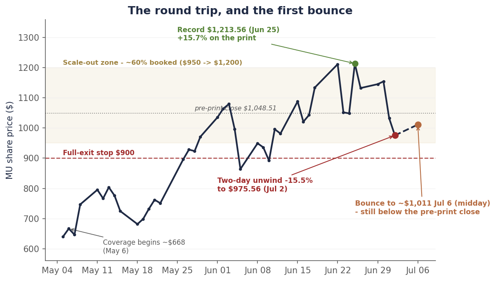
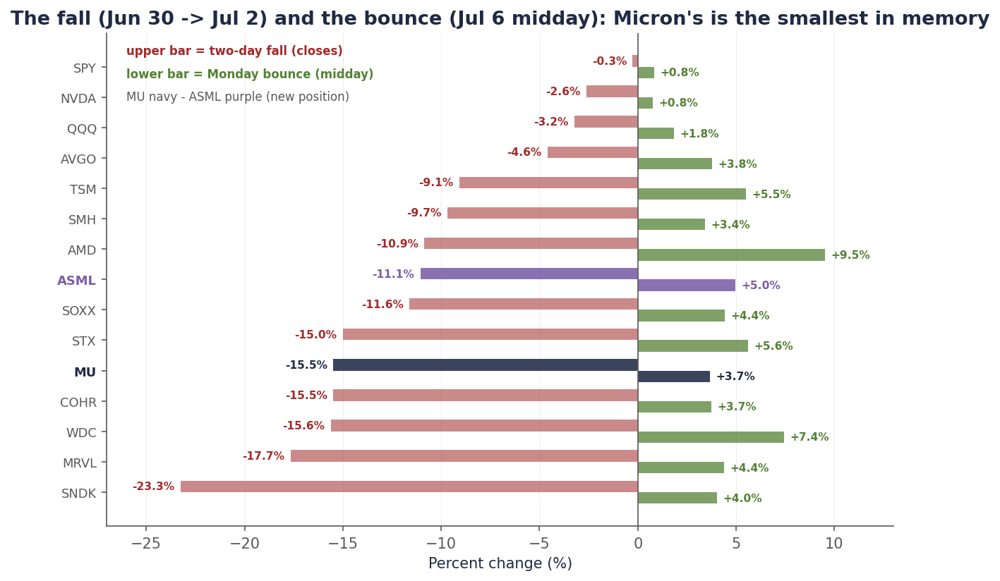
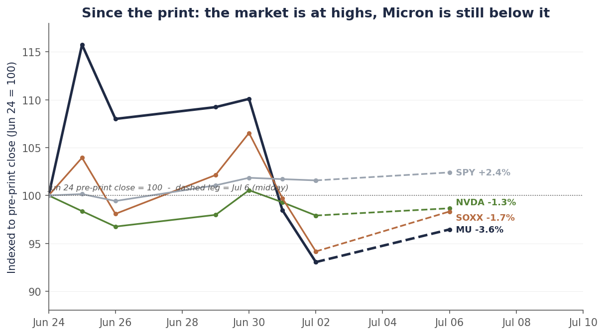

Single-name update · Memory · The bounce
The bounce came with names attached. Micron’s was the smallest. Friday is why.
Last week the memory trade unwound: two sessions took Micron from $1,154 to $975.56 — the entire blowout pop repossessed, and then some. We walked the mechanics in Thursday’s standalone note — a flows story with a real but bounded fundamental kernel — and the demand-side reframe that triggered it in this week’s outlook. Monday the dip got bought, and not anonymously: UBS raised its Q3 DRAM contract-price forecast to +32% from +17% and sees undersupply “until at least 2Q28,” BofA reiterated Micron at $1,550 and called the drop “a healthy reset, not a structural change in AI demand,” Citi put Micron on its 90-day upside-catalyst watch, and Samsung is reportedly pushing DRAM contract hikes of up to 20% for the third quarter — its third consecutive quarterly increase — into a preliminary print due Tuesday that consensus expects to be the largest quarterly operating profit in its history, roughly 18× last year’s.
And yet: by midday Monday Micron was up 3.7% — the smallest bounce of any memory or storage name on the board. Western Digital +7.4%, Seagate +5.6%, SanDisk +4.0%, Marvell +4.4%, AMD +9.5% on a Goldman target raise. When everything in the complex is being bought on the same thesis and one name lags them all, the market is telling you that name carries something extra. It is, and it’s dated: SK hynix confirmed Monday morning that its ~$28 billion Nasdaq ADR debut — the largest ADR offering on record — begins trading Friday under the ticker SKHY.
So the week splits cleanly. Tuesday, Samsung’s record print either re-anchors memory earnings or wobbles them. Friday, the listing clears — and with it the single overhang we can actually date. We hold the runner behind the $900 stop, we add nothing before Friday, and the base target stays ~$1,300, set in Thursday’s note for exactly this reason. One change to the book: we initiated a position in ASML — the toolmaker that gets paid by both sides of the memory-cycle question. The full initiation piece is coming.
Chart 1 — The round trip, and the first bounce
From the $1,213.56 record to $975.56 in six sessions — and a Monday bounce that still leaves Micron below its pre-print close.

Daily closes, May 5–July 2, 2026; the July 6 point (dashed leg) is a midday snapshot taken ~noon ET with the market open. At ~$1,011, Micron remains 3.6% below the June 24 pre-print close and 16.7% below the June 25 record. Source: bpleon price feed.
The bounce, ranked — and what the ranking says
Monday’s tape was a dip-buyer’s tape: the Nasdaq up well over a point by late morning, the Dow briefly above 53,000 for the first time ever, and semis leading. The bids had reasons attached. Goldman raised AMD to a $640 target from $450 — AMD ripped more than 8%. Broadcom extended its custom-chip partnership with Apple through 2031 — AVGO jumped. And memory got the full defense: the UBS forecast raise, the BofA “healthy reset” note pointing out that memory now carries 35–40% of cloud AI capex yet “trades at sub-par 10x forward PE,” Citi’s catalyst watch, and Korea’s Friday session — while US markets were closed for the holiday — already up big, with the Kospi +5.8% and SK hynix +10.9% on the Samsung price-hike reports.
Rank Monday’s bounce against last week’s fall, though, and one bar sticks out. Every storage name that fell 15–23% bounced 4–7.4%. Micron fell right with them — and bounced 3.7%, less than SanDisk, less than Seagate, less than Western Digital, less than Marvell, barely more than the SMH index itself. The names defending Micron by name — UBS, BofA, Citi — were defending the whole complex; the market bought the complex and still under-bought Micron.
Chart 2 — The fall and the bounce, side by side
Everything that fell got bought back Monday — Micron least among memory. The overhang has a date on it.

Upper bars: change in closing price, June 30 → July 2. Lower bars: July 2 close → July 6 ~noon ET. Micron in navy; ASML — a new position, initiation note upcoming — in purple. Sources: bpleon price feed; analyst actions per Yahoo Finance/CNBC reporting, July 6.
Note Nvidia again, the control group in both directions: −2.6% through the unwind, +0.8% on the rebound. It never priced a demand problem, so it had nothing to un-price. The violence, both ways, lived in memory and the things priced like memory — which is what you’d expect if the move was positioning being forced out and then walked back in, not the cycle ending.
Chart 3 — The fork since the print
Two weeks after the best quarter in memory history: the market is at highs, and Micron is still below its own blowout.

Closing prices indexed to the June 24, 2026 pre-print close (=100); the July 6 point (dashed leg) is a ~noon ET snapshot. Micron remains the only line meaningfully below 100 — the bounce has not yet repaired the round trip. Source: bpleon price feed.
Tuesday re-anchors the earnings. Friday clears the overhang.
Tuesday: Samsung’s preliminary Q2. Consensus sits near ₩86 trillion of operating profit — roughly $56 billion, about 18× a year ago, a third consecutive record — on memory pricing that Korean brokers estimate rose ~55% quarter-over-quarter in DRAM and ~60% in NAND. A Samsung Securities strategist framed the moment better than we could: “The market now stands at an inflection point where doubts about an AI peak-out must be resolved with numbers.” That is the print’s job. A blowout re-anchors the whole complex’s earnings power days before the listing; a miss — after this specific week — would give the unwind its second leg.
Friday: the SKHY debut. The structure is now official: roughly $28 billion at current prices — 17.79 million new shares, about 2.5% of the company, split ten-to-one into ADRs — the largest ADR offering on record, ahead of Alibaba’s 2014 debut. Two things are true about it at once. For Micron’s multiple, it is the end of an era: the only-US-listed-memory scarcity premium we cut our target for last week dies at the open, and Monday’s lagging bounce is the market pricing that in real time. For the industry, it is the supply-side question made flesh: the proceeds are earmarked for new Korean fab capacity and EUV lithography tools — the capital that eventually answers this shortage. How SKHY trades, and how memory trades around it, is the cleanest test we will get of whether last week was positioning (our read, and now UBS’s and BofA’s) or the beginning of the cycle question.
What the defense misses, and what the panic missed, is the same thing: the pricing data was never the problem. TrendForce’s July 3 update has third-quarter DRAM contract prices rising another 13–18% — slower than Q2’s ~58–63% and Q1’s ~90–95%, which is the deceleration we flagged, but still rising, with spot prices drifting sideways-to-up through the crash week. The bear case last week wasn’t priced off shipping data; it was priced off headlines — Meta’s excess-compute cloud, an Anthropic–Samsung custom-chip report, Apple exploring Chinese memory suppliers, a short-seller’s position — every one of them a demand-side narrative landing on the most crowded positioning of the half. Narratives reprice multiples. Contracts pay earnings. Both are real; they are not the same thing.
The book: the runner, the stop, and a new name
Nothing about the plan changed, because nothing about the plan was supposed to change on a bounce we said could come. The ~40% Micron runner stays behind the pre-committed line: a close below $900 and we are out in full — at midday that line sits 11.0% below. We add nothing before Friday’s listing clears and nothing before the late-July hyperscaler capex prints referee the demand side, July 22–31. The base target stays ~$1,300, the multiple-cut re-rate we published Thursday — and we’d note the Street’s Monday defense brackets it usefully: BofA’s $1,550 sits above us on the same earnings, and UBS’s undersupplied-to-2028 call is the bull case for the EPS inputs we deliberately left unchanged. If Samsung’s print and the listing both clear clean, the path back toward the bull cells runs through those two facts, not through Monday’s bounce.
| Item | Status |
|---|---|
| As of | July 6, 2026, ~noon ET (intraday; market open) |
| Rating | HOLD the residual — unchanged from Thursday’s note |
| Price | ~$1,011 (+3.7% from Thursday’s $975.56 close; −16.7% from the record; −3.6% vs. pre-print) |
| Base PT | ~$1,300 (unchanged; cut from ~$1,500 on July 2 — scarcity-premium multiple cut, earnings intact) |
| Street brackets | BofA $1,550 (Jul 6 reiterate, “healthy reset”) · UBS undersupplied “until at least 2Q28” · Citi 90-day upside watch |
| Position | ~60% booked $950–$1,200; holding the ~40% residual (15 shares) |
| Stop | Close below $900 = full exit (~11% below midday) — worst case still locks ~+53% blended on the call |
| This week | Samsung preliminary Q2 Tuesday Jul 7 · Warsh-Fed minutes Wednesday · SKHY debut Friday Jul 10 |
| Then | June CPI + banks Jul 14 · ASML Q2 Jul 15 · hyperscaler capex prints Jul 22–31 (the referee) |
| New position | ASML — initiated; full initiation note upcoming |
Why ASML, and why now
The unwind gave us the entry we’d been waiting for in the one name that doesn’t have to answer the question the rest of the complex is fighting about. ASML fell 11.1% across the two-day rout — sympathy damage in a name whose order book runs on multi-year lead times, days after a June in which its Amsterdam shares set a record close. Here is the asymmetry we’re buying, and it was on display this week: if memory stays tight, the shortage argument (UBS: undersupplied until at least 2Q28) forces capacity expansion — and capacity is bought from ASML. If supply answers — the bear case — it answers through ASML: SK hynix’s $28 billion raise is earmarked for new fabs and EUV tools, and Samsung’s record profits fund the same shopping list. The toolmaker gets paid by both sides of the memory-cycle question. That is the EUV-bottleneck logic our June 29 outlook sketched, converted into a position. It reports Q2 on July 15, having already raised full-year guidance to €36–40 billion in April. The full initiation — thesis, numbers, kill-shots, sizing — is the next piece in the queue.
Disclosure: I/we have beneficial long positions in the shares of MU and ASML through stock ownership. The MU position has been reduced by roughly 60% through a disciplined scale-out into the June rally; a residual is retained behind a stop, as described above. The ASML position was initiated recently; an initiation note with full thesis and disclosures is forthcoming. I wrote this article myself, and it expresses my own opinions. I am not receiving compensation for it. I have no business relationship with any company whose stock is mentioned. This is research and analysis only, not personalized financial advice. This commentary is for informational and educational purposes only and does not constitute investment, tax, or legal advice or a solicitation to buy or sell any security. Past performance is not indicative of future results. Readers should conduct their own research and consult a qualified financial professional before making investment decisions. Intraday figures are a ~noon ET July 6 snapshot and may differ from the close. Sources include the bpleon price feed; UBS/BofA/Citi/Goldman analyst actions as reported by Yahoo Finance, CNBC, and Investing.com (July 6); TrendForce contract- and spot-price data (July 1–3); Samsung preliminary-earnings consensus via LSEG as reported by Reuters/BigGo; SK hynix F-1 filings and listing reporting via Bloomberg and Korean media; and Micron’s FQ3 2026 8-K and earnings-call transcript. See disclaimer.